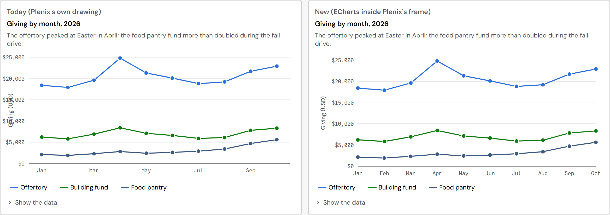
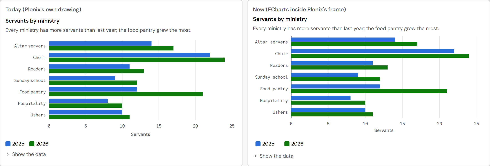
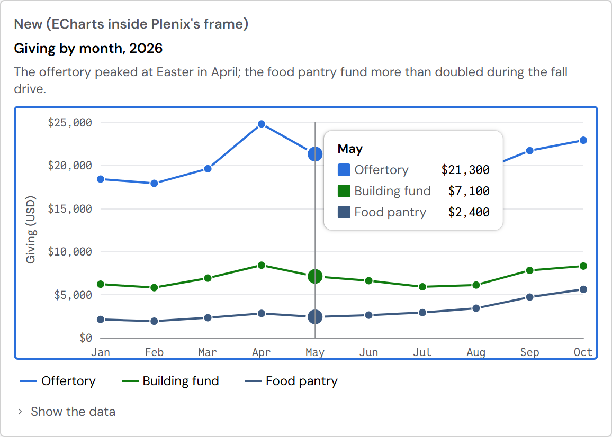
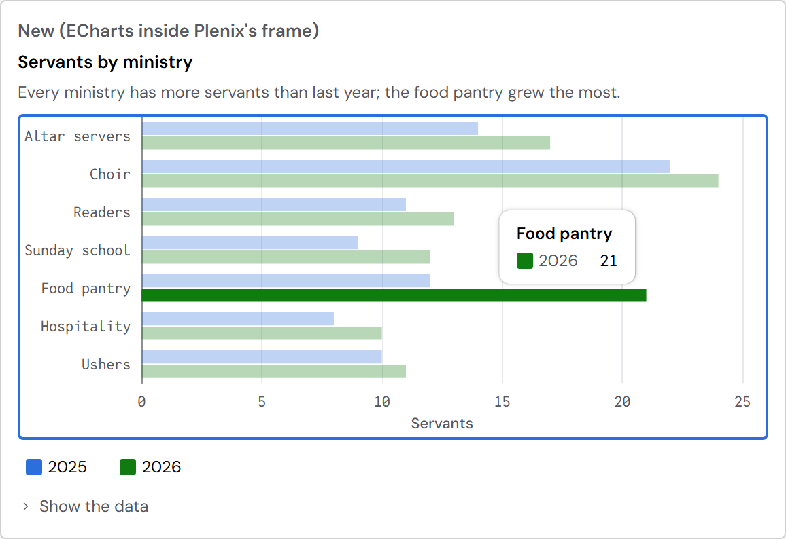
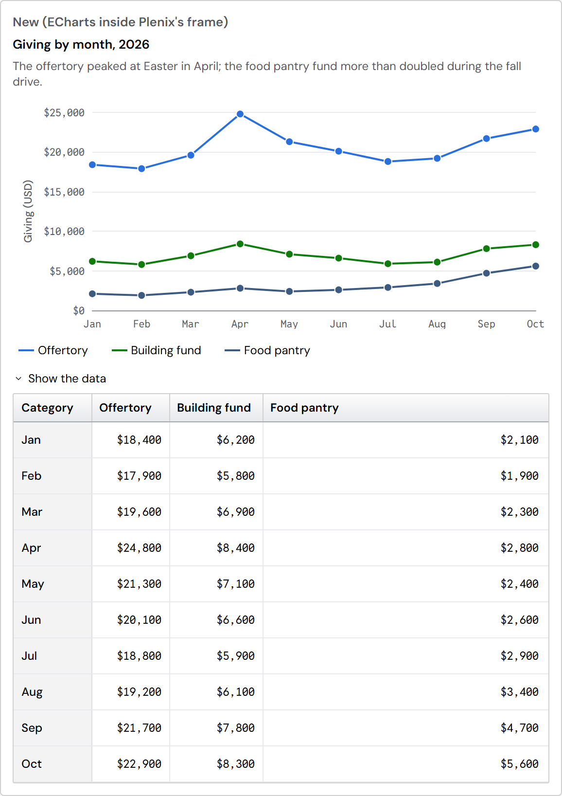

Plenix charts, drawn by Apache ECharts
You chose ECharts on 2026-10-26. This page shows LineChart and BarChart drawn the new way, next to today's, and the plan for the rest. Apps keep every chart's name and settings; only the drawing underneath changes. Nothing has been built into the Platform yet: this is a preview for your look.
In short: ECharts draws the lines, bars and axes; Plenix keeps everything around them: the title and description, one Tab stop with the arrow keys, what a screen reader hears, the legend, the tooltip and "Show the data". Colors, lines and fonts come from Plenix's tokens. The dollar labels that today's LineChart cuts off now fit. Open the live preview to try it with the keyboard and the pointer.
LineChart: today and new

BarChart: today and new

Keyboard, screen reader and "Show the data" (Plenix's own layer)



How it works
- Same names, same settings. An app still writes <LineChart title=… data=… series=… />. Each Plenix chart turns its settings into ECharts' settings, so no app changes.
- Plenix keeps the frame. ChartFrame (title, description, size), the one Tab stop with the arrow keys, the live region (what a screen reader hears), the legend that hides and shows a series, the tooltip and "Show the data" stay exactly as they are today. ECharts' own tooltip and legend are not used, so every chart behaves the same way.
- ECharts draws. It draws inside the frame's plot area, with its own room for the axis labels (that is the clipping fix) and its animations.
- One change to ChartFrame when this is built: a place for ECharts to draw in. The preview does this without touching the Platform.
The look: an ECharts theme made from Plenix tokens
- The theme reads Plenix's own chart styles where the chart sits, so the series colors (the data-viz palette, in order, as seriesColor() gives them), line widths, point size, axis and grid lines, the data font for numbers and the label font all come from the existing --plx-sys-* and --plx-comp-chart-* tokens.
- No new colors. Nothing is written in the code: change a token and the charts follow.
- The animation length is the motion token, so "reduce motion" turns it off.
- Dark mode last, as you asked: the theme already re-reads the tokens when the page changes mode, but nothing in dark mode has been checked.
Shipping: on our own server, only what is used
- ECharts 6.1.0 (Apache-2.0) is copied into Plenix like React, with its license; no code comes from anyone else's server.
- Only the chart types and parts that are used are included. The full ECharts file is 360 KB (compressed); the four first charts together are 188 KB.
- Recommended: ECharts loads the first time a page shows a chart (as the text editor's engine does), so pages without charts load nothing extra.
| What is included | Size sent (compressed) | Added on top of the engine |
|---|---|---|
| The engine (every chart needs it) | 133 KB | — |
| LineChart, AreaChart | 168 KB | +35 KB |
| BarChart, WaterfallChart | 166 KB | +33 KB |
| PieChart | 143 KB | +9 KB |
| ComboChart | 176 KB | +42 KB |
| LollipopChart | 171 KB | +37 KB |
| BulletChart | 172 KB | +39 KB |
| ScatterChart | 162 KB | +29 KB |
| BoxPlot | 166 KB | +32 KB |
| RadarChart | 149 KB | +15 KB |
| HeatMap (with the calendar) | 175 KB | +41 KB |
| Treemap | 148 KB | +15 KB |
| FunnelChart | 138 KB | +5 KB |
| Gauge | 138 KB | +4 KB |
| SankeyDiagram | 146 KB | +13 KB |
| NetworkGraph | 153 KB | +19 KB |
| TimelineChart, GanttChart | 172 KB | +38 KB |
| GeoMap (without the map shapes) | 182 KB | +49 KB |
| Reference lines and notes on a chart | 144 KB | +11 KB |
| Line, Bar, Area and Pie together | 188 KB | +55 KB |
| Every chart type together | 265 KB | +131 KB |
| For comparison: all of ECharts | 360 KB | — |
Measured 2026-10-26 with ECharts 6.1.0, minified and compressed (gzip), drawing as SVG. Sizes of charts together are smaller than the sum, since they share the engine and the axes.
Order
- First: LineChart, AreaChart, BarChart and PieChart, with the theme, the ChartFrame change and the shared tooltip and legend. Each one shown to you before it ships.
- Then: ComboChart, WaterfallChart, LollipopChart, BulletChart, ScatterChart, BoxPlot, RadarChart, HeatMap, FunnelChart, Gauge, Treemap, SankeyDiagram.
- Last: TimelineChart, GanttChart, NetworkGraph, GeoMap (these need the most custom work).
Every chart, and what ECharts draws it with
"Fits" means ECharts has the same thing. The last column lists the settings that need extra work or have no clean match in ECharts.
| Plenix chart | ECharts draws it with | Fits? | Needs extra work |
|---|---|---|---|
| LineChart | line + grid | Fits | zoom: Plenix's brush sets the range ECharts shows; overlay (free drawing on top) becomes reference lines and notes |
| AreaChart | line (filled) + grid | Fits | stack="percent": Plenix works out the shares first |
| BarChart | bar + grid | Fits | layout="percent": shares worked out first; histogram: Plenix's bins, drawn as touching bars |
| PieChart | pie | Fits | variant="half" (a half ring) and centerValue: angles and a text in the middle; maxSlices "Other": Plenix groups first |
| ComboChart | bar + line + grid | Fits | — |
| WaterfallChart | bar (stacked, hidden base) | Close | No waterfall in ECharts: the usual way is a hidden bar under each step; Plenix's waterfallSteps stays |
| LollipopChart | bar (thin) + scatter | Close | No lollipop in ECharts: a thin bar and a dot |
| BulletChart | bar + mark line | Close | No bullet chart in ECharts: the ranges as bars behind, the target as a line |
| ScatterChart | scatter + grid | Fits | trend: Plenix works out the trend line (ECharts would need an extra add-on) |
| BoxPlot | boxplot + scatter | Fits | Plenix's boxStats stays (ECharts' own needs an extra part) |
| RadarChart | radar | Fits | — |
| HeatMap | heatmap + grid or calendar + color scale | Fits | scale="diverging": the palette's diverging steps |
| FunnelChart | funnel | Close | Plenix's funnel is bars; ECharts' is a funnel shape. Bars can stay bars (bar + grid) |
| Gauge | gauge | Fits | thresholds: colored stretches of the arc |
| Treemap | treemap | Fits | — |
| SankeyDiagram | sankey | Fits | A flow back to an earlier step is not allowed in ECharts either |
| NetworkGraph | graph | Close | layout="hierarchical": Plenix places the nodes, ECharts draws them; keyboard moves along links stay Plenix's |
| TimelineChart | custom + grid + mark line | Custom | No timeline in ECharts: drawn with its "custom" chart; today as a line |
| GanttChart | custom + grid + mark line | Custom | No Gantt in ECharts: drawn with its "custom" chart |
| GeoMap | map + geo + scatter + color scale | Close | The map shapes are the app's (as today); projection="mercator" needs a small projection function |
| Sparkline | (line or bar, no axes) | Keep Plenix's | Hundreds of tiny charts in a table would each start ECharts: today's small drawing is lighter. Recommended: keep it |
| WordCloud | (none) | Keep Plenix's | ECharts has no word cloud (only a separate add-on). Recommended: keep it |
| Diagram | (graph) | Keep Plenix's | Flowchart shapes and arrows are not a data chart; ECharts' graph draws them worse. Recommended: keep it |
| ChartFrame | Plenix's | Stays | Gets a place for ECharts to draw in |
| Axis, GridLines | axis settings | Fits | Become theme and chart settings |
| ChartLegend | Plenix's | Stays | Hides and shows series in ECharts |
| ChartTooltip | Plenix's | Stays | Placed by ECharts' positions |
| DataLabel | series labels | Fits | — |
| ReferenceLine | mark line | Fits | — |
| ChartAnnotation | mark point, mark area | Fits | — |
| Chart interaction (keyboard, live region) | Plenix's | Stays | Lights up the value in focus through ECharts |
| Chart helpers (scales, seriesColor, a11y patterns) | Plenix's | Stays | seriesColor feeds the theme; the patterns for color blindness can become ECharts' patterns |
| chart-kit (today's pointer-only hover) | — | Retires | Replaced by the shared keyboard and pointer layer |
For you to decide
- Does the new look and behavior pass? (the pictures and the live preview)
- Keep Sparkline, WordCloud and Diagram as Plenix drawings? Recommended: yes.
- Start with Line, Area, Bar and Pie? Recommended: yes, each shown to you before it ships.
Codex's chart clean-up pull requests (#222 to #225) become unnecessary with this plan; they stay open until you say to close them.